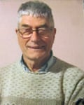
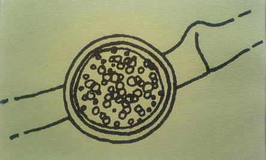

My father, Arthur Callaghan, who has died aged 93, was a biology lecturer at Staffordshire University and passionately committed to “blue sky” research: scientific endeavour for its own sake. His investigation of the natural world, in particular the study of fungi and their interactions with microscopic organisms, sustained a deep fascination that lasted throughout his life.
Arthur Callaghan
Part of his research involved the study of the fungi Conidiobolus and Basidiobolus, and their saprotrophic and pathogenic qualities (ie species’ ability to colonise and obtain nutrients from dead microscopic animals such as mites and springtails, or infect and kill them). In 1989, he co-discovered and named, with Steve Waters, a new species, Conidiobolus iuxtagenitus .
“So what?” I might have asked Dad as a facetious teenager, on hearing the news. It was a question he returned to many times. Sitting at his workbench, surrounded by old marmalade tins full of leaf litter, he might have answered the impertinent question by saying that, by putting the living world under the microscope, he might one day improve our understanding of it; that conducting blue-sky research means that we won’t necessarily know how one modest piece fits into the whole; but that when enough pieces are brought together, by different people, at different times, then those jigsaw pieces might create a picture that could enlighten us all.
Born in Harrow, which was then in Middlesex and is now in London, Arthur was the son of Helen (nee Baldock), a nurse, and Joseph Callaghan, an accountant. After the family moved to Bolton, he went to Harper Green school, in nearby Farnworth.
After leaving school at 14, he attended Blackburn Technical College, alongside adults, in order to gain qualifications. He was then offered a place at Durham University to study chemistry – the first in his family to go to university. After graduation in 1954, then national service in the RAF, he trained and worked as a science teacher, primarily in London.
A hand drawing by Arthur Callaghan of Conidiobolus iuxtagenitus, a species he and Steve Waters discovered in 1989
His love of fungi led him to pursue a PhD in mycology at Birkbeck, University of London. He also taught adults botany at night school, in Chiswick, west London, which is where he met Pat McArdle, a BBC researcher. They married in 1961.
Once the doctorate was complete in 1968, the couple settled in Madeley, Staffordshire, where Arthur trained teachers at the education college, and indulged his pursuits of cricket and mountain walking. The couple also enjoyed going to the opera and theatre.
After Madeley College of Education closed in the 1980s, Arthur returned to study, gaining a master’s degree in ecology at Bangor University, then a lecturing position in the biology department of what was then Staffordshire Polytechnic. It gained university status in 1992.
There, he built a reputation for being generous with his time, enthusiasm and knowledge with colleagues and students alike. After retirement in 1995, he continued his research as an honorary visiting fellow, and in his DIY home laboratory.
Pat died in 2018. Arthur is survived by two children, Danny and me, and three grandchildren, Joe, Sam and Mabli.